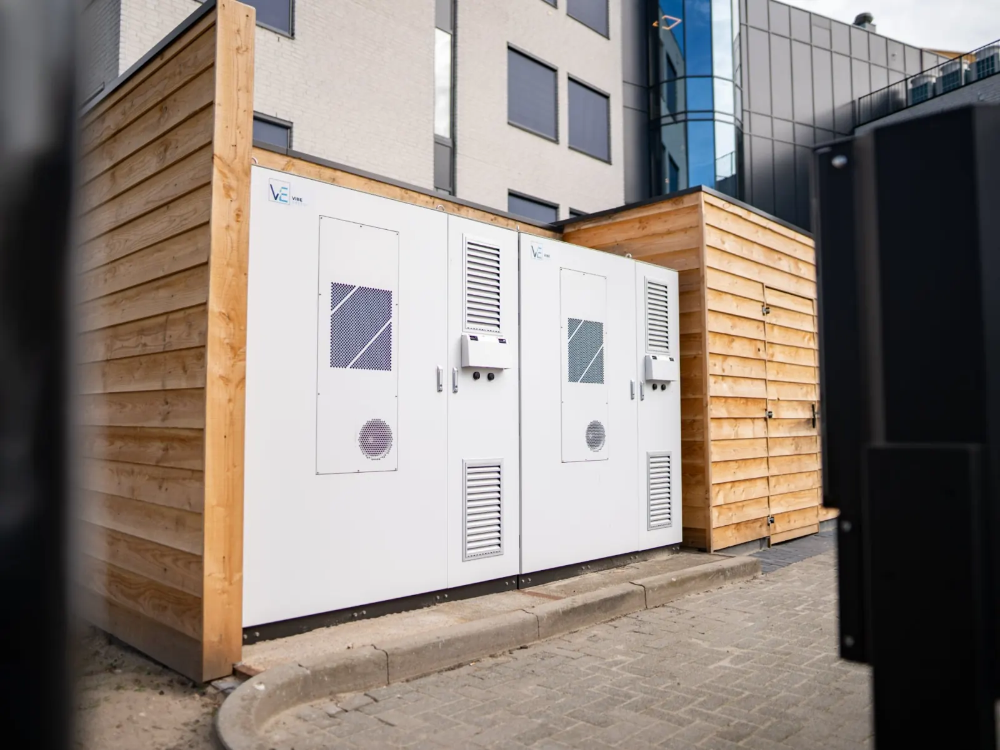
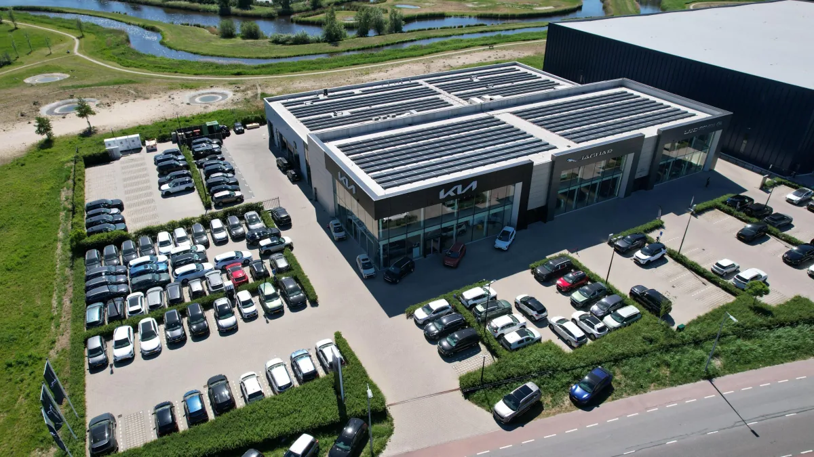

Losse assets naast elkaar. Of één systeem dat zichzelf in balans houdt.
Op de meeste locaties staan zonnepanelen, een batterij en laadpunten er als losse installaties bij. Een microgrid maakt er één samenhangend energiesysteem van: de assets sturen elkaar aan via de regelaar, zodat de locatie zelfstandig kan balanceren.
Losse assets lossen elkaars probleem niet op.
Elke installatie doet precies waarvoor hij besteld is. Wat ontbreekt is de afstemming ertussen — en juist daar zit het knelpunt.
Elk asset kijkt alleen naar zichzelf
De batterij weet niet dat de laadpunten zo aanslaan, en het dak weet niet dat het pand op dat moment weinig vraagt. Wat de één overhoudt, koopt de ander in.
De piek komt samen op dezelfde kabel
Opwek, gebouwlast en laden gebruiken allemaal dezelfde aansluiting. Zonder onderlinge afstemming bepaalt hun toevallige gelijktijdigheid wat er nog bij kan.
Elk merk zijn eigen portaal
Aparte apps, aparte meldingen, aparte leveranciers. Niemand kijkt naar het geheel, dus stuurt ook niemand het geheel bij.

Van losse installaties naar één lokale centrale.
De route is op elke locatie dezelfde: verbinden wat er al staat, er één regelaar boven zetten en het systeem zelf de afweging laten maken.
Losse assets
Zon, opslag en laadpunten draaien elk op hun eigen logica, zonder weet van elkaar.
Verbinden
Bestaande installaties zijn meestal te koppelen via open protocollen en blijven staan waar ze staan.
De regelaar balanceert
Eén regelaar weegt per moment af waar het vermogen vandaan komt en waar het heen gaat.
Eén lokale centrale
De locatie gedraagt zich als één samenhangend systeem dat zelfstandig kan balanceren.
Virtuele netverzwaring: meer bruikbare capaciteit op de aansluiting die er al ligt.
Er komt geen kabel bij en er wordt niets verzwaard. Doordat opwek, opslag en verbruik op elkaar zijn afgestemd, blijft er binnen dezelfde aansluiting meer vermogen bruikbaar dan wanneer elke installatie zijn eigen gang gaat — zonder fysieke verzwaring en zonder wachtrij bij de netbeheerder.
Wat er verandert zodra het één systeem is.
Meer bruikbare capaciteit
Doordat de opslag de gelijktijdigheid opvangt en de regelaar de verdeling bewaakt, past er meer onder dezelfde aansluitwaarde: extra laadpunten, een zwaardere verbruiker of simpelweg ruimte om te groeien.
Binnen de aansluiting die er al ligt.
Minder afhankelijk van het net
Wat op het terrein wordt opgewekt, wordt daar eerst gebruikt. Hoe meer het systeem zelf oplost, hoe minder het aankomt op wat er op dat moment van buiten moet komen.
Schaalbaar naar meerdere locaties
Eén microgrid is de bouwsteen. Meerdere locaties samen vormen een Energy Hub.

Gerealiseerd als één samenhangend systeem.
Locaties waar opwek, opslag en laden onder één regelaar zijn gebracht in plaats van los van elkaar te draaien.

Ratio 16
Zon, opslag en laden werken er als één systeem binnen 51 kW.
Bekijk het project →
Hedin Alkmaar
300 kW opslag, in vier dagen geïnstalleerd.
Bekijk het project →
Dormio Medemblik
215 kWh opslag en 219 panelen, met het hele park gebundeld tot één geheel.
Bekijk het project →Goed om te weten.
Wat is een microgrid precies?
Een samenhangend energiesysteem op één locatie dat zelfstandig kan balanceren. Opwek, opslag en verbruik zijn met elkaar verbonden en sturen elkaar aan via de regelaar, in plaats van ieder voor zich te werken.
Wat verandert er ten opzichte van losse assets?
De samenhang. Dezelfde installaties, maar nu met één afweging erboven: de opslag weet wanneer er geladen wordt, het dak levert aan het pand voordat er wordt teruggeleverd, en het geheel blijft binnen de grens van de aansluiting.
Moeten mijn bestaande installaties eruit?
Meestal niet. Bestaande installaties zijn doorgaans te koppelen via open protocollen en komen dan onder dezelfde regelaar te hangen, zonder dat ze vervangen hoeven te worden. Of dat bij u lukt, blijkt uit wat er staat en welke protocollen het ondersteunt.
Krijg ik hiermee meer capaciteit op mijn aansluiting?
Meer bruikbare capaciteit, ja: virtuele netverzwaring, zonder fysieke verzwaring en zonder wachtrij bij de netbeheerder. Het transportvermogen van uw aansluiting verandert niet; wat verandert is hoeveel daarvan u daadwerkelijk kunt benutten. Hoeveel dat in uw situatie is, volgt uit uw verbruiksprofiel.
En als ik meerdere locaties heb?
Dan is een microgrid de bouwsteen. Meerdere locaties die samen worden aangestuurd vormen een Energy Hub; de eerste locatie hoeft daar niet op te wachten.
Benieuwd wat er op uw locatie al verbonden kan worden?
Stuur ons uw verbruiksgegevens en een overzicht van wat er nu staat. Wij brengen in beeld welke assets onder één regelaar kunnen en wat dat binnen uw aansluiting vrijspeelt.
Vrijblijvend.